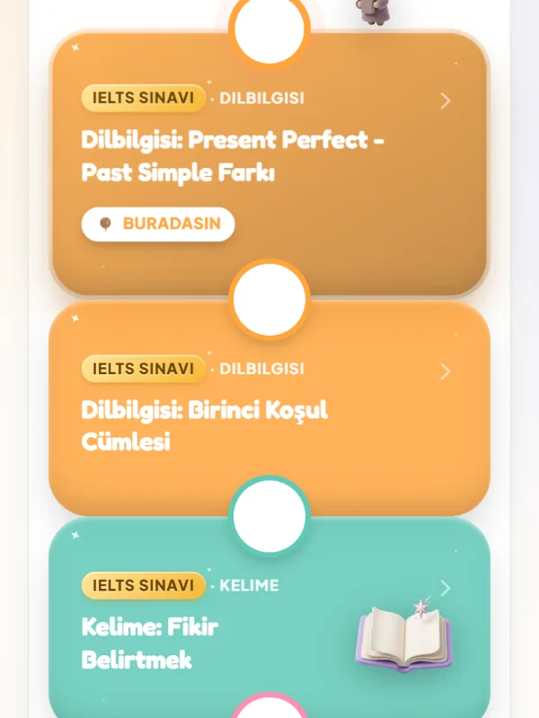

IELTS hazırlık
IELTS Speaking'e konuşarak hazırlan.
Gerçek format, birebir geri bildirim, sana göre plan.
Uygulamada "IELTS Sınavı" hedefini seç.

Sınavda seni ne zorluyor?
Gerçek format
Part 1, 2, 3 provası
Kendini duymak
kaydet, dinle, düzelt
Soruyu cevaplamak
konudan sapmadan konuş
Akıcılık
duraksamadan, doğal
Kelime ve kalıp
aynı kelimeyi tekrarlama
Sınav kaygısı
prova ettikçe azalır
Ders + uygulama
Speaking derste, gerisi her gün.
Konuşmana birebir geri bildirimi derste alırsın. Kelime, dinleme ve dilbilgisini uygulamanın IELTS yolunda her gün çalışırsın.
Uygulama ücretsiz. iPhone'da tarayıcıdan açılır.
Öğrenci Kulübü
IELTS hazırlık dersi ve paketler.
Uygulama herkese ücretsiz. Öğrenci Kulübü, Farin'den özel ders alanlar için.
Birebir online ders
Farin ile, konuşma ağırlıklı.
VIP yol haritası
Seviyene, tarzına ve üç hedefine göre.
10 derslik programlar
Dersler adım adım ilerler.
Kulüp paketleri
İlk Adım
Keşif
Kahraman Yolculuğu
Ödeme ve saatler WhatsApp'ta netleşir.
Merak edilenler
Sıkça sorulan sorular
IELTS için ne kadar sürede hazır olurum?
Seviyene, hedef puanına ve haftalık çalışmana bağlı. Süre ya da puan garantisi vermiyoruz; ilk derste gerçekçi bir tempo belirleriz.
IELTS Speaking için özel pratik var mı?
Evet, odağımız burası. Üç bölümü zaman baskısıyla prova eder, kendini kaydedip dinler, ezber yerine doğal cevap üzerine çalışırız.
Reading, Writing ve Listening de var mı?
Ana odak Speaking. Diğer bölümlere derste değinilir; uygulamanın IELTS yolunda kelime, dinleme ve dilbilgisini her gün çalışırsın.
Belirli bir bant puanı garanti ediyor musunuz?
Hayır. Sonuç birçok şeye bağlı. Sunduğumuz şey düzenli, konuşma ağırlıklı bir hazırlık.
Hiç IELTS sınavına girmedim, nereden başlamalıyım?
İlk derste seviyeni belirler, sınav formatını birlikte tanır ve sana göre bir plan çıkarırız.
Sınav yolun burada başlıyor.
İlk ders ücretsiz. Puan değil, hazırlık sözü veriyoruz.
Öğrenmen gerektiği için değil, gidecek bir yerin olduğu için.